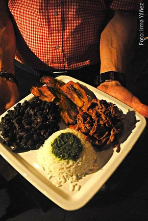

Pabellon Criollo
Ingredientes
- 1 1/2 pounds flank steak
- 2 teaspoons bouillon cubes
- 4 clove cloves minced garlic
- 6 tablespoons vegetable oil
- 1 1/2 teaspoons salt
- 1 cup white rice, soaked for 20 minutes in warm water
- 1 cup chopped onions (2-3 medium onions)
- 1 15-ounce can black beans
- 1 teaspoon chicken bouillon cube
- 1 1/2 teaspoons cumin
- 1/2 teaspoon garlic powder
- 1 tablespoon vinegar
- 2 tablespoons butter
- 2 medium tomatoes, diced

Areapa Reina Pepiada
Ingredientes
- 2 6-ounce skinless, boneless chicken breasts
- 1/2 small onion, sliced
- Salt and freshly ground black pepper
- 1 ripe Hass avocado, pitted, peeled, and coarsely chopped
- 1/4 cup mayonnaise
- 1 tablespoon distilled white vinegar, plus more to taste
- 2 tablespoons minced fresh cilantro
- 2 tablespoons minced fresh parsley
- 1/2 jalapeño, seeded and minced
- 2 garlic cloves, minced
- 1/2 cup seeded and diced (1/4-inch) red bell pepper
- 2 tablespoons finely chopped red onion
- 1 scallion, white and green parts, finely chopped